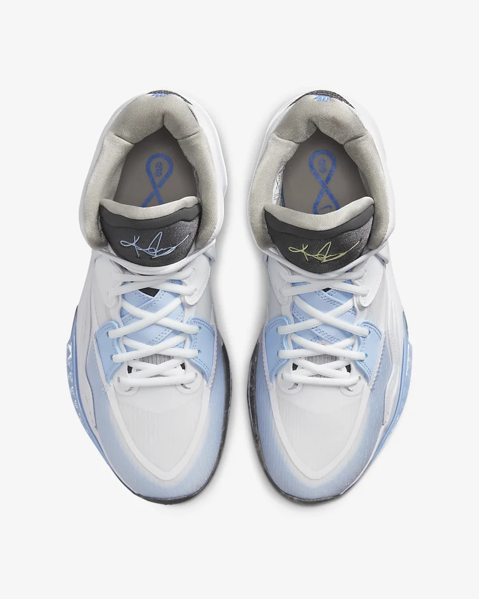

.png)
Products
-
Lebron James
LeBron thrives when stakes are high and the pressure's on. The LeBron 19 harnesses that energy with a locked-in fit and an updated cushioning system. The snug inner sleeve is pulled together by a sculpted overlay that the laces feed through to help prevent the foot from moving inside the shoe. Cushioned pods around the collar and tongue add comfort while reducing weight, giving players the secure feel and confidence to go all out when the game is on the line.
-
Siren Red
-
Grey Fog
-
Multi-Colour
-
Kevin Durant
Kevin Durant thrives on big games. When the stakes are high, he'll play every minute if it means getting a crucial victory. The KD15 is ready to go the distance. Lighter than his previous signature shoe, it helps you stay bouncy and comfortable at crunch time. The ride is as smooth as KD's pull-up jumper and the cushioning is as plush as his right-to-left crossover in traffic, so that you can feel contained when your team needs you the most. This version is made for outdoor court use with its extra-durable rubber outsole.
-
Multi-Colour
-
Light Lemon Twist
-
University Red
-
Kyrie Infinity
The faster Kyrie slows down, the quicker he can speed up or change direction. His ability to control his movement keeps defenders guessing—and him in control. The Kyrie Infinity EP provides a cushioned, custom fit and traction up the sides, allowing players to accelerate and decelerate on demand and take advantage of the separation they create.
-
Light Iron Ore
-
White
-

Iron Grey
-
Nike Solo Swoosh "Lifesyle"
These classic hoops-inspired shorts are made from soft, brushed French terry for easy comfort.
-
.jpg)
-
Black
-
Nike Pro Dri-FIT "Training & Gym
Make a statement while you zigzag in your training moves. This design asks you to find your inner pro while you stay cool and dry with fabric technology. Seaming detail and a Nike Pro elastic waistband. These shorts encourage every athlete to embrace the game of a champion.
-
Dark Smoke
-
Nike Yoga Therma-Fit "Yoga"
The soft and stretchy Nike Yoga Therma-FIT Shorts let you flow freely through your session—or anywhere else your day takes you. They bring purpose to your practice with a comfy, sweat-wicking design. This product is made from at least 75% sustainable materials, using a blend of both recycled polyester and organic cotton fibres. The blend is at least 10% recycled fibres or at least 10% organic cotton fibres.
-
White
-
Los Angeles Lakers Icon Edition 2022/23
Every team has its true colours, an unmistakable identity that sets it apart from the rest of the league. Honouring a rich hoops heritage, this Los Angeles Lakers jersey is inspired by what the pros wear on the hardwood, from squad details to lightweight, sweat-wicking mesh. It helps keep you dry and cool on or off the court while you rep your favourite player and the game you love.
-

-
Milwaukee Bucks Icon Edition 2022/23
Every team has its true colours, an unmistakable identity that sets it apart from the rest of the league. Honouring a rich hoops heritage, this Milwaukee Bucks jersey is inspired by what the pros wear on the hardwood, from squad details to lightweight, sweat-wicking mesh. It helps keep you dry and cool on or off the court while you rep your favourite player and the game you love.
-
Washington Wizards City Edition
Every NBA franchise has a playlist of its greatest hits—a compilation of iconic moments from the past that tell the team's definitive story. The 2021–22 Washington Wizards City Edition Swingman Jersey blends elements from kits forever linked to the team's lore. The jersey is royal blue with big red stripes—a nod to the team's classic striped kits. The "Washington" emblem across the chest references a classic font, while "41" and an iconic player's signature above the jock tag pay tribute to the team's former Rookie of the Year and MVP. This product is made from 100% recycled polyester fibres.
-